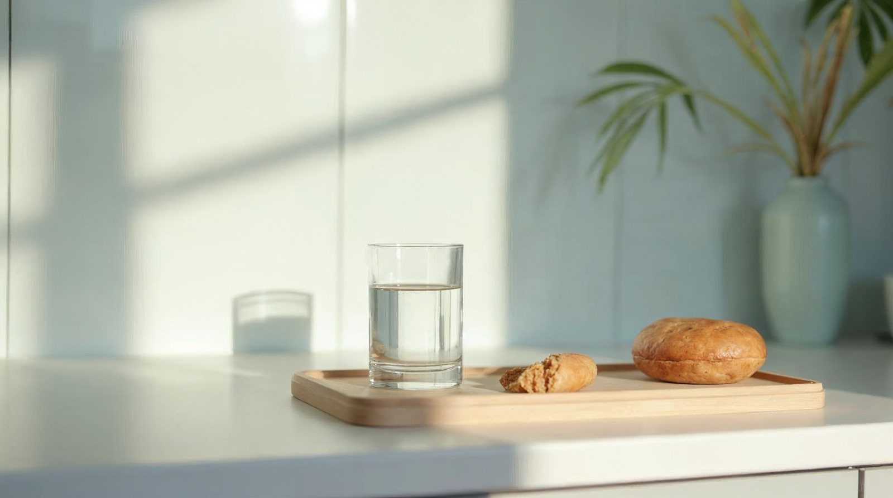

이종호 한의사 감수좋은꿈참사랑한의원 대표원장 (한의사 면허번호 19769)발행 2026-11-25 · 수정 2026-11-26
이 글의 차례
- 왜 당화혈색소는 몇 달의 흐름을 보여 줄까요
- 왜 기록이 더 중요할까요
- 공복혈당과는 무엇이 다를까요?
- 예를 들면 이런 경우입니다
- 스스로 점검해 보세요
- 먼저 이렇게 여쭙니다
- 일상에서 먼저 해 볼 수 있는 것
- 이런 경우에는 검사 전에 먼저 말씀해 주세요
- 가족과 함께 오시면 좋은 점
- 검사 날은 이렇게 준비하세요
- 한의원에서 함께 살필 수 있는 경우
- 처음 오시면 이렇게 살핍니다
- 결과를 받은 뒤에는 이렇게 이어 갑니다
- 집에서 먼저 해 볼 수 있는 식사 요령
- 숫자 앞에서 마음이 무거울 때
- 얼마나 지켜보고 언제 상담할까요
- 다음 검사까지 이렇게 기록해 보세요
- 자주 하는 오해
- 헷갈리기 쉬운 점
- 이렇게 기록해 오시면 상담이 쉬워집니다
- 이런 증상은 먼저 확인이 필요합니다
당화혈색소 검사를 앞두고 꼭 굶어야 하는지 묻는 분이 많습니다. 금식 여부는 함께 하는 검사에 따라 달라질 수 있어 방문 전 전화(02-815-7510)로 확인해 주시고, 그 밖의 준비는 식사보다 기록이 핵심입니다. 이 수치는 하루의 혈당보다 최근 몇 달의 흐름을 반영하기 때문입니다.
좋은꿈참사랑한의원에서는 진찰 후 필요하다고 판단될 때 검사하며, 결과는 생활 상담의 참고로 씁니다.
예를 들어 검사 전날 저녁을 굶었다고 해서 당화혈색소가 낮아지지는 않습니다. 이 수치는 지난 몇 달 동안의 식사와 활동, 잠이 쌓여 나타나는 값에 가깝기 때문입니다. 그래서 검사 당일의 준비보다, 지난 검사 이후 생활이 어떻게 달라졌는지를 함께 이야기하는 것이 결과를 이해하는 데 더 도움이 됩니다.
이 글에서는 검사 날 무엇을 챙기면 좋을지, 결과지를 받은 뒤에는 어떻게 이어서 보면 좋을지 차례로 정리했습니다. 처음 검사를 앞두고 긴장되는 분이라면, 준비할 것이 생각보다 단순하다는 데서 조금 마음을 놓으셔도 됩니다.
왜 당화혈색소는 몇 달의 흐름을 보여 줄까요
핏속의 적혈구에는 산소를 나르는 혈색소가 들어 있고, 혈액 속 포도당 일부가 이 혈색소에 달라붙습니다. 혈당이 높은 날이 많을수록 포도당이 붙은 혈색소의 비율도 늘어나는데, 이 비율을 숫자로 나타낸 것이 당화혈색소입니다.
적혈구는 대략 석 달 남짓 몸속을 돌다가 새것으로 바뀐다고 알려져 있습니다. 그래서 당화혈색소는 오늘 아침의 혈당보다 지난 두세 달 동안 혈당이 대체로 어느 높이에 머물렀는지를 보여 주는 숫자에 가깝습니다. 검사 전날 하루를 조심한다고 숫자가 크게 달라지지 않는 이유도 여기에 있습니다.
왜 기록이 더 중요할까요
- 당화혈색소는 하루가 아니라 몇 달의 흐름을 보여 주는 수치입니다.
- 이전 검진 수치와 나란히 봐야 방향이 보입니다.
- 복용 중인 약이 있으면 해석할 때 함께 알아야 합니다.
- 빈혈 등 다른 상태가 수치에 영향을 줄 수 있다고 알려져 있습니다.
- 최근 몸이 많이 아팠거나 큰 스트레스가 있었던 시기에는 혈당 흐름이 평소와 다를 수 있습니다.
공복혈당과는 무엇이 다를까요?
공복혈당은 검사하는 그 순간의 혈당이라 전날 저녁 식사나 잠, 그날 아침의 긴장에 따라 오르내릴 수 있습니다. 당화혈색소는 몇 달의 평균에 가까워서 하루의 사정에 덜 흔들립니다. 두 숫자는 서로 다른 것을 보여 주기 때문에, 검진 결과지에 둘 다 있다면 함께 놓고 보는 것이 좋습니다.
예를 들어 공복혈당은 괜찮은데 당화혈색소가 조금 높게 나왔다면, 식후에 혈당이 오르는 시간이 길었을 가능성을 생각해 볼 수 있습니다. 반대로 공복혈당만 한 번 높게 나왔다면 전날의 늦은 식사나 잠 부족을 먼저 떠올려 봅니다. 어느 쪽이든 진단은 내과에서 확인하시고, 저는 그 사이의 생활을 함께 살핍니다.
예를 들면 이런 경우입니다
예를 들어 회사 건강검진에서 '혈당 주의'라는 말을 처음 듣고 걱정이 되어 오시는 분이라면, 그 결과지를 그대로 가져오시는 것이 가장 좋은 준비입니다. 검진 날짜와 수치를 알면 지금 다시 잰 결과가 그때보다 어느 쪽으로 움직였는지 이어서 볼 수 있습니다.
예를 들어 몇 달 전부터 저녁 간식을 줄이고 걷기를 시작한 분이라면, 언제부터 무엇을 바꿨는지 간단히 적어 오세요. 당화혈색소는 몇 달의 생활이 쌓인 숫자라서, 바꾼 시점과 검사 날짜 사이의 간격을 알아야 결과를 읽기가 쉬워집니다.
예를 들어 최근 몇 주 동안 감기몸살을 심하게 앓았거나 이사, 시험 같은 큰일을 치른 분이라면 그 시기도 함께 말씀해 주세요. 몸이 힘든 시기에는 식사와 잠이 흐트러지기 쉬워, 숫자를 해석할 때 참고가 됩니다.
스스로 점검해 보세요
- 최근 건강검진 결과지를 어디에 두었는지 알고 있다
- 지금 먹는 약과 영양제의 이름을 말할 수 있다
- 지난 몇 달 사이 식사나 운동에서 바꾼 것이 있다
- 저녁을 늦게 먹거나 밤에 간식을 먹는 날이 일주일에 서너 번 넘는다
- 식후에 유난히 졸리거나, 끼니 사이에 심한 허기를 자주 느낀다
- 가족 가운데 당뇨를 진단받은 분이 있다
- 빈혈이 있다는 이야기를 들은 적이 있다
해당하는 항목은 메모해 두었다가 진료 때 그대로 보여 주세요. 체크 목록은 진단이 아니라 이야기를 시작하는 실마리입니다.

먼저 이렇게 여쭙니다
- 최근 건강검진에서 혈당이나 당화혈색소를 들은 적이 있나요?
- 혈당이나 혈압 약을 드시고 있나요?
- 요즘 갈증, 잦은 소변, 피로가 있나요?
- 식사 시간과 간식 습관은 어떤가요?

일상에서 먼저 해 볼 수 있는 것
- 지난 건강검진 결과지를 찾아 두기
- 복용 중인 약과 영양제 이름을 적어 두기
- 검사를 앞두고 며칠만 식사를 크게 바꾸지 않기
- 검사 전후로 궁금한 점을 메모하기
- 검사 전 몇 주 동안 아팠던 날이나 큰 일정이 있었는지 떠올려 보기
이런 경우에는 검사 전에 먼저 말씀해 주세요
- 빈혈이 있다는 이야기를 들었거나 철분제를 드시는 경우
- 최근 몇 달 사이 수술을 받았거나 피를 많이 흘린 적이 있는 경우
- 신장이나 간 질환으로 다니는 병원이 있는 경우
- 임신 중이거나 임신 가능성이 있는 경우
이런 상태는 당화혈색소 숫자에 영향을 줄 수 있다고 알려져 있어, 결과를 볼 때 함께 알고 있어야 합니다. 특히 임신 중이라면 먼저 말씀해 주시고, 혈당 관리는 다니시는 산부인과와 상의하시기를 권합니다.
가족과 함께 오시면 좋은 점
식사는 혼자보다 가족과 함께 하는 경우가 많아서, 생활을 바꾸는 일도 가족의 이해가 있으면 훨씬 수월합니다. 장보기와 요리를 맡은 가족이 함께 오시면 반찬 구성이나 저녁 식사 시각을 어떻게 바꿀 수 있을지 그 자리에서 함께 이야기할 수 있습니다.
부모님의 검사라면 자녀분이 약 목록과 검진 결과지를 미리 챙겨 드리는 것만으로도 큰 도움이 됩니다. 어르신이 약 이름을 기억하기 어려우시면 약 봉투나 처방전을 그대로 가져오셔도 됩니다.
검사 날은 이렇게 준비하세요
- 1. 금식이 필요한지 방문 전에 전화로 확인합니다.
- 2. 지난 건강검진 결과지와 복용 중인 약 목록을 가방에 넣습니다.
- 3. 평소 드시던 약은 처방받은 대로 드시고, 검사 때문에 임의로 거르지 않습니다.
- 4. 최근 몇 주 사이 아팠던 날이나 크게 달라진 생활을 한두 줄 적어 둡니다.
- 5. 결과를 보며 묻고 싶은 것을 미리 적어 둡니다.
검사 자체보다 이 다섯 가지를 챙기는 데 시간을 쓰시는 편이 결과를 이해하는 데 더 도움이 됩니다. 빠뜨린 것이 있어도 괜찮으니, 진료 때 기억나는 만큼 말씀해 주세요.
한의원에서 함께 살필 수 있는 경우
- 검진에서 혈당 경계 소견을 들은 경우 식사·잠·활동을 함께 살핍니다.
- 체중과 체성분 변화가 함께 궁금한 경우 인바디 결과와 나란히 봅니다.
- 피로와 식욕 변화가 함께 있는 경우 생활 리듬을 이어서 여쭙니다.
좋은꿈참사랑한의원에서는 맥부터 짚으며 검진 기록과 생활 이야기를 여쭙고, 필요하다고 판단될 때 당화혈색소 검사기로 확인합니다. 결과는 생활 상담의 참고 자료이며, 당뇨 진단과 약 조절은 내과에서 확인하도록 안내해 드립니다. 결과가 괜찮게 나와도 드시던 혈당약은 처방한 의사와 상의 없이 줄이거나 끊지 마세요.
처음 오시면 이렇게 살핍니다
처음 오시는 날에는 숫자보다 생활 이야기를 먼저 듣습니다. 맥은 모든 분께 짚고, 하루 식사 시간과 간식, 잠드는 시각, 걷는 양, 요즘 느끼는 피로와 갈증을 차례로 여쭙습니다. 가져오신 검진 결과지와 약 목록도 이때 함께 봅니다.
진찰 뒤 필요하다고 판단될 때 당화혈색소를 확인하고, 체성분이 함께 궁금하다면 필요한 경우 인바디 결과와 나란히 봅니다. 결과는 생활 계획을 함께 세우는 참고로 쓰고, 진단과 약에 관한 판단은 내과에서 받으시도록 안내합니다.
결과를 받은 뒤에는 이렇게 이어 갑니다
결과지를 받으면 먼저 지난 검진 수치와 나란히 놓고 방향을 봅니다. 그다음 그 몇 달 동안의 식사 시간, 저녁 식사와 잠자리 사이의 간격, 식후에 움직였는지 같은 생활의 흐름을 짝지어 봅니다. 숫자가 높든 낮든, 생활에서 바꿀 수 있는 것을 한두 가지만 골라 정합니다.
예를 들어 저녁 식사가 늦고 바로 눕는 습관이 있다면 식사 시각을 조금 당기거나 식후에 잠깐 걷는 것부터 시작해 볼 수 있습니다. 한꺼번에 많은 것을 바꾸면 오래가기 어려워서, 작은 것 하나를 몇 주 이어 가는 쪽을 권합니다.
결과지는 버리지 말고 날짜 순서대로 한곳에 모아 두세요. 한 번의 숫자보다 두 번, 세 번 이어진 숫자가 훨씬 많은 것을 알려 줍니다. 결과지 귀퉁이에 그 무렵 바꾼 생활을 한 줄 적어 두면, 몇 달 뒤 다시 펼쳤을 때 무엇이 도움이 되었는지 돌아보기 쉽습니다. 다음 진료 날짜를 정할 때 그 결과지를 함께 가져오시면 이야기가 빨라집니다.
집에서 먼저 해 볼 수 있는 식사 요령
- 한 끼 안에서 채소와 단백질 반찬을 먼저 먹고, 밥이나 면은 나중에 먹어 봅니다.
- 한 숟가락씩 천천히 씹어, 한 끼를 15분보다 짧게 끝내지 않도록 합니다.
- 달달한 커피 음료나 주스는 물이나 보리차로 하나씩 바꿔 봅니다.
- 저녁 식사와 잠자리 사이에 두세 시간 정도 간격을 두도록 해 봅니다.
- 식후 바로 소파에 눕기보다 설거지나 집 앞 산책처럼 가볍게 몸을 움직입니다.
모두 한꺼번에 하실 필요는 없습니다. 지금 생활에서 가장 쉬워 보이는 것 하나를 골라 몇 주 이어 가 보시고, 다음 진료 때 해 보니 어땠는지 들려주세요. 해 보기 어려웠던 이유도 함께 이야기해 주시면 다른 방법을 같이 찾습니다.
숫자 앞에서 마음이 무거울 때
혈당 이야기를 들으면 '이제 먹고 싶은 것을 다 참아야 하나' 싶어 마음이 무거워지는 분이 많습니다. 하지만 당화혈색소는 몇 달의 생활이 쌓여 나온 숫자이고, 그만큼 앞으로 몇 달의 생활로 다시 흐름을 만들어 갈 수 있는 숫자이기도 합니다.
저는 결과지를 함께 볼 때 잘못한 것을 찾기보다 지켜 온 것을 먼저 찾습니다. 아침을 챙겨 먹은 날이 늘었는지, 걷는 날이 생겼는지 같은 작은 변화가 다음 결과지를 읽는 바탕이 됩니다. 걱정이 많이 되는 날에는 그 마음도 진료 때 편하게 털어놓아 주세요.
얼마나 지켜보고 언제 상담할까요
- 다음 검사 간격은 내과에서 안내받은 것이 있다면 그대로 따르시고, 그사이 생활 기록을 이어 갑니다.
- 생활을 바꾼 지 몇 주가 지났는데도 식후 졸림이나 허기가 그대로라면 진료 때 그 기록을 함께 봅니다.
- 새로 약을 시작했거나 용량이 바뀌었다면, 다음 진료 때 바뀐 날짜와 함께 알려 주세요.
- 기록을 하다 보니 궁금한 점이 쌓였다면, 다음 검사 날까지 기다리지 말고 진료 때 메모를 그대로 보여 주셔도 됩니다.
- 생활을 바꾸다 지치는 시기가 오면 계획을 더 작게 나누어 다시 정하면 되니, 그 이야기도 편하게 들려주세요.

다음 검사까지 이렇게 기록해 보세요
- 하루 세끼와 간식을 먹은 시각을 한 줄씩 적습니다.
- 식후에 10분이라도 걸은 날에는 표시해 둡니다.
- 잠든 시각과 일어난 시각을 적습니다.
- 유난히 갈증이 나거나 피곤했던 날은 짧게 메모합니다.
- 새로 시작하거나 바꾼 약이 있으면 날짜와 함께 적습니다.
이 기록을 다음 결과지와 나란히 놓으면, 숫자가 왜 그쪽으로 움직였는지 함께 짐작해 보기 쉬워집니다. 매일 빠짐없이 쓰지 못해도 괜찮고, 일주일에 며칠이라도 이어 가는 것이 중요합니다.
자주 하는 오해
- 검사 전 며칠 동안 단 음식을 끊으면 숫자가 낮게 나온다고 여기기 쉽지만, 몇 달의 흐름을 보는 수치라 며칠의 노력으로는 크게 달라지지 않습니다.
- 수치가 괜찮으면 식후 혈당도 늘 괜찮다고 생각하기 쉬운데, 평균이 괜찮아도 오르내림이 클 수 있습니다.
- 한의원에서 잰 수치만으로 당뇨 여부가 정해진다고 오해하시는 분이 있지만, 진단은 내과에서 확인합니다.
- 약을 먹고 있으면 생활은 상관없다고 여기기 쉽지만, 식사와 잠, 활동은 약과 함께 흐름을 만드는 바탕입니다.
헷갈리기 쉬운 점
당화혈색소가 괜찮게 나왔다고 해서 식후에 혈당이 크게 오르내리는 일이 없다는 뜻은 아닙니다. 평균을 보는 수치이기 때문입니다. 식후 졸림이나 심한 허기가 잦다면 그 내용도 함께 말씀해 주시고, 자세한 평가는 내과에서 받으시면 됩니다.
이렇게 기록해 오시면 상담이 쉬워집니다
- 이전 검진의 혈당·당화혈색소 수치와 날짜
- 복용 중인 약과 영양제
- 최근 한두 주의 식사 시간 메모
- 갈증·소변·피로 같은 변화
- 최근 석 달 사이 체중 변화와 아팠던 시기
이런 증상은 먼저 확인이 필요합니다
- 심한 갈증이나 잦은 소변이 이어지거나, 이유 없이 체중이 줄거나 시야가 흐려지는 경우
- 당뇨약이나 인슐린을 쓰는 중에 식은땀, 떨림, 의식이 흐려지는 느낌이 있는 경우
이런 신호가 있으면 한의원보다 가까운 병원이나 응급실을 먼저 찾으세요.

여쭙는 것
- 최근 건강검진에서 혈당이나 당화혈색소를 들은 적이 있나요?
- 혈당이나 혈압 약을 드시고 있나요?
- 요즘 갈증, 잦은 소변, 피로가 있나요?
생활에서 해 볼 것
- 지난 건강검진 결과지를 찾아 두기
- 복용 중인 약과 영양제 이름을 적어 두기
- 검사를 앞두고 며칠만 식사를 크게 바꾸지 않기
한의원에서 함께 살필 것
- 검진에서 혈당 경계 소견을 들은 경우 식사·잠·활동을 함께 살핍니다.
- 체중과 체성분 변화가 함께 궁금한 경우 인바디 결과와 나란히 봅니다.
- 피로와 식욕 변화가 함께 있는 경우 생활 리듬을 이어서 여쭙니다.
먼저 확인이 필요한 신호
- 심한 갈증이나 잦은 소변이 이어지거나, 이유 없이 체중이 줄거나 시야가 흐려지는 경우
- 당뇨약이나 인슐린을 쓰는 중에 식은땀, 떨림, 의식이 흐려지는 느낌이 있는 경우
한눈에 보는 표
| 구분 | 핵심 |
|---|---|
| 여쭙는 것 | 최근 건강검진에서 혈당이나 당화혈색소를 들은 적이 있나요? 혈당이나 혈압 약을 드시고 있나요? |
| 생활에서 해 볼 것 | 지난 건강검진 결과지를 찾아 두기 복용 중인 약과 영양제 이름을 적어 두기 |
| 한의원에서 함께 살필 것 | 검진에서 혈당 경계 소견을 들은 경우 식사·잠·활동을 함께 살핍니다. 체중과 체성분 변화가 함께 궁금한 경우 인바디 결과와 나란히 봅니다. |
| 먼저 확인이 필요한 신호 | 심한 갈증이나 잦은 소변이 이어지거나, 이유 없이 체중이 줄거나 시야가 흐려지는 경우 당뇨약이나 인슐린을 쓰는 중에 식은땀, 떨림, 의식이 흐려지는 느낌이 있는 경우 |
자주 묻는 질문
굶고 가야 하나요?
함께 하는 검사에 따라 달라질 수 있어 방문 전 전화(02-815-7510)로 확인해 주세요.
한의원 결과로 당뇨 진단을 받나요?
아닙니다. 진단과 약 조절은 내과에서 확인합니다.
결과지를 가져가야 하나요?
이전 검진 결과지가 있으면 흐름을 이어서 보기 쉽습니다.
얼마 만에 다시 검사하나요?
수치와 상태에 따라 다르며, 내과에서 안내받은 간격이 있다면 그 간격을 따르시면 됩니다.
검사 전에 평소 먹던 약은 먹어도 되나요?
처방받은 대로 드시고 검사 때문에 임의로 거르지 마세요. 궁금한 점은 처방한 의사에게 먼저 확인하시고, 진료 때 약 목록을 보여 주세요.
수치가 지난번보다 올랐어요.
그사이 식사·잠·활동이 어떻게 달라졌는지 함께 짚어 보고, 진단과 약에 관한 판단은 내과에서 확인하시도록 안내해 드립니다.
좋은꿈참사랑한의원은 재진 때 지난번 이야기부터 이어서 여쭙니다. 진료시간과 예약은 오시는 길에서 확인하세요.
어디서 상담받을 수 있나요?
좋은꿈참사랑한의원은 서울 동작구 만양로2길 2 신성빌딩 3층·5층(서울 동작구 상도동, 7호선 상도역 3번 출구 근처)에 있습니다. 한의사 3명(이종호 대표원장, 조영기 수석진료원장, 정원영 진료원장)이 진료합니다. 진료시간은 평일 09:30~20:00(점심 13:00~14:00), 토·일·공휴일 09:30~15:00이며, 방문 전 전화로 확인을 권합니다. 예약은 네이버 예약, 카카오톡 상담, 전화 02-815-7510로 받습니다.
이 글은 일반적인 건강 정보이며 개인의 진단이나 치료를 대신하지 않습니다. 증상이 있거나 복용 중인 약이 있다면 진료를 통해 확인하세요. 치료 효과는 개인마다 다를 수 있습니다.
작성 기준: 일반적으로 알려져 있는 건강 정보를 참고해 정리했습니다(대표원장 감수). 증상 기록은 1~2주 동안 하루 1회, 비슷한 시간에 적어 오시면 지난 상태와 비교하기 쉽습니다.